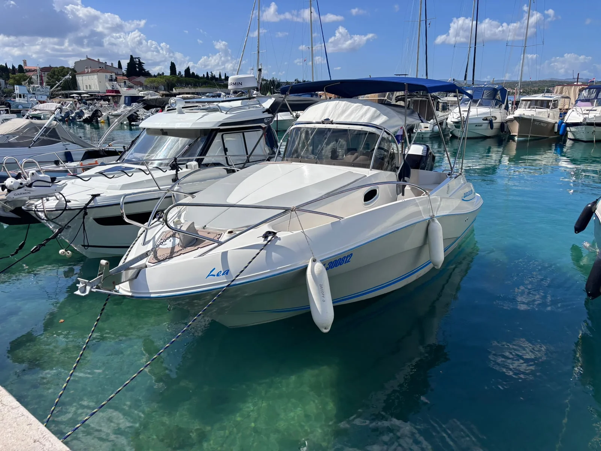
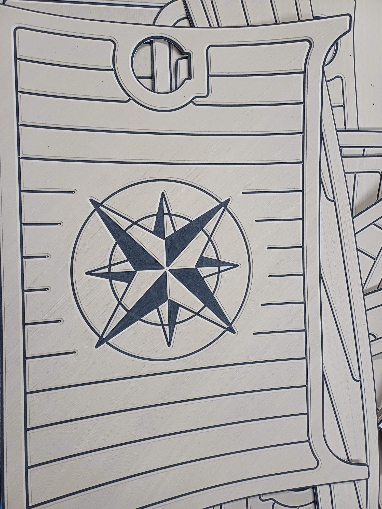
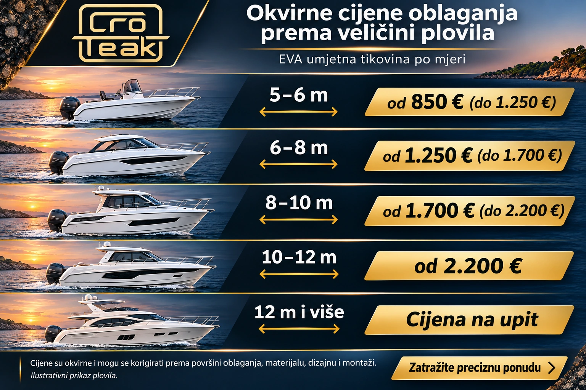
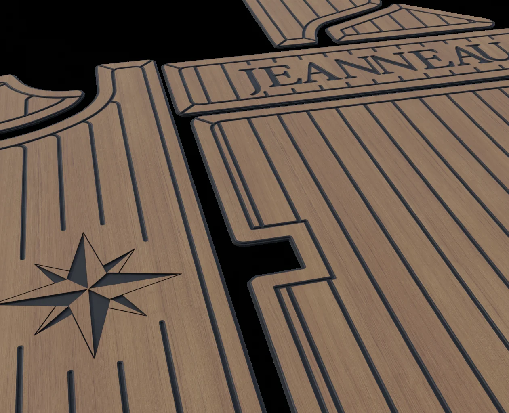

Protuklizna površina
Teksturirana površina i udobnost pod nogama za svakodnevni boravak na palubi.

EVA umjetna tikovina izrađena po mjeri vašeg plovila. Digitalna izmjera, personalizirani dizajn i precizna CNC izrada.
CroTeak bira pažljivo odabran EVA materijal za zahtjevne uvjete na plovilima. Ne oslanjamo se na generičke obloge nepoznatih svojstava: važni su struktura, podloga za lijepljenje i mogućnost precizne obrade.

Teksturirana površina i udobnost pod nogama za svakodnevni boravak na palubi.
Samoljepljiva podloga s 3M 9775WL ljepilom. Priprema podloge ostaje ključan dio kvalitetne montaže.
Materijal s deklariranom UV otpornošću. Svojstva odabrane varijante potvrđujemo prije narudžbe.
Zatvorena ćelijska struktura i definirana gustoća materijala, uz CNC izradu svakog panela po mjeri.
Prema duljini plovila, za početnu orijentaciju.
Svaku ponudu prilagođavamo vašem projektu.

| Duljina plovila | Okvirna cijena |
|---|---|
| 5–6 m | od 850 € (do 1.250 €) |
| 6–8 m | od 1.250 € (do 1.700 €) |
| 8–10 m | od 1.700 € (do 2.200 €) |
| 10–12 m | od 2.200 € |
| 12 m i više | Cijena na upit |
Navedene cijene služe za početnu orijentaciju i mogu se korigirati naviše ili naniže. Konačna cijena ovisi o stvarnoj površini oblaganja, obliku i složenosti panela, odabranom materijalu, njegovoj potrošnji i ostacima pri krojenju, dizajnu i gravurama, pripremi podloge, montaži te lokaciji plovila. Sama duljina broda ne određuje konačnu cijenu. Preciznu ponudu potvrđujemo nakon pregleda fotografija ili izmjere i dogovora o opsegu radova.
Naša oprema. Naši nacrti. Stvarni projekti.
Odaberite korak i upoznajte proces izbliza.

Prodim Prolinerom bilježimo rubove, otvore, poklopce i zaobljenja vašeg plovila. Izmjera je prvi korak naše usluge izrade EVA obloga po mjeri.

U digitalnom nacrtu usklađujemo raspored panela, smjer linija, obrube, gravure i logotipe. Prikaz dizajna pregledavamo s vama prije izrade.
Prema pripremljenom CAD nacrtu strojno režemo i graviramo EVA materijal. Tako nastaju zasebni paneli, kontrastne linije i personalizirani motivi.

Nakon provjere rasporeda i pristajanja, paneli se postavljaju na pripremljenu podlogu. Slijedi završna kontrola rubova, poklopaca i detalja. Uslugu montaže dogovaramo zasebno.
Ime broda, prepoznatljiv kompas ili detalj koji ima posebno značenje. Dizajn razvijamo zajedno s vama i uklapamo ga u raspored panela.
Razgovarajmo o vašoj ideji
Imate ideju za svoje plovilo? Pošaljite nam fotografije i zajedno ćemo definirati oblogu koja mu pristaje.
Zatražite ponuduUpiti i dogovor putem WhatsAppa
Kako izgleda narudžba